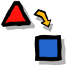

مرحبا بكم في موقع معرفة التعليمي
خصائص الموقع
- تجميع الدروس ذات العلاقة ببعضها البعض في صفحة واحدة.
- تمارين تحتوي على عدد كبير من الأسئلة
- لا حاجة لتحميل وتثبيت برامج جديدة
- استفادة كل مستخدم من أي تحديث أو إضافة لمادة معينة على الموقع الالكتروني.
- جميع المحتوى مجاني ومعرب في مشروع غير ربحي
لتشغيل البرامج يجب التأكد من تثبيت برنامج جافا على جهازك، يمكنك تحميله مجانا من الموقع الرسمي

دروس رياضيات معربة
علماء رياضيات
الخوارزمي

الخوارزمي (حوالي 781- حوالي 845 )، كان من اوائل علماء الرياضيات المسلمين حيث ساهمت اعماله بدور كبير في تقدم الرياضيات في عصره. ابتكر الخوارزمي مفهوم الخوارزمية في الرياضيات و علم الحاسوب، (مما اعطاه لقب ابو علم الحاسوب)عند البعض، حتى ان كلمة خوارزمية في العديد من اللغات (و منها algorithm بالانكليزية) اشتقت من اسمه، بالاضافة لذلك، قام الخوارزمي باعمال هامة في حقول الجبر و المثلثات والفلك و الجغرافية و رسم الخرائط.
عمرالخيّام
كان يشتغل في صغره بصنع وبيع الخيام ولذا كنيّ(بالخيّام ) وقد أكثر من التنقل في طلب العلم منذ نعومة أظفاره حتى أستقر في بغداد عاد 466هجرية . أبدع في كثير من فنون المعرفة مثل الرياضيات والفلك واللغة والفقه والتاريخ والأدب. تشعب اهتمامه حتى حوى علم الفلك . ركز على دراسة هندسة إقليدس المشروحة والمعلق عليها من طرف علماء الرياضيات المسلمين.دروس وتمارين اللغة العربية
تمارين الرياضيات

تعرف على الأعداد الكسرية
مسائل رياضية- 
المربع السحري 
لعبة المنطق سودوكو
الحساب الذهني
جدول الضرب
Copyright © 2011-2012 Maarifa | تصميم أحمد منصور
هذا الموقع مُنشأ و يُدار بأدوات مفتوحة المصدر و محتواه منشور برخصة المشاع الإبداعي: النسبة-بذات الرخصة، الإصدارة 3.0